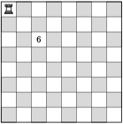
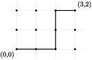
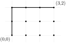
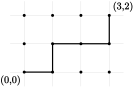
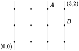

In chess, a rook can move only in straight lines (not diagonally). Fill in each square of the chess board below with the number of different shortest paths the rook, in the upper left corner, can take to get to that square. For example, one square is already filled in. There are six different paths from the rook to the square: DDRR (down down right right), DRDR, DRRD, RDDR, RDRD and RRDD.

Here are some apparently different discrete objects we can count: subsets, bit strings, lattice paths, and binomial coefficients. We will give an example of each type of counting problem (and say what these things even are). As we will see, these counting problems are surprisingly similar.
SubsectionSubsets
Subsets should be familiar, otherwise read over Section 0.3 again. Suppose we look at the set \(A = \{1,2,3,4,5\}\text{.}\) How many subsets of \(A\) contain exactly 3 elements?
First, a simpler question: How many subsets of \(A\) are there total? In other words, what is \(|\pow(A)|\) (the cardinality of the power set of \(A\))? Think about how we would build a subset. We need to decide, for each of the elements of \(A\text{,}\) whether or not to include the element in our subset. So we need to decide “yes” or “no” for the element 1. And for each choice we make, we need to decide “yes” or “no” for the element 2. And so on. For each of the 5 elements, we have 2 choices. Therefore the number of subsets is simply \(2\cdot 2\cdot 2 \cdot 2\cdot 2 = 2^5\) (by the multiplicative principle).
Of those 32 subsets, how many have 3 elements? This is not obvious. Note that we cannot just use the multiplicative principle. Maybe we want to say we have 2 choices (yes/no) for the first element, 2 choices for the second, 2 choices for the third, and then only 1 choice for the other two. But what if we said “no” to one of the first three elements? Then we would have two choices for the 4th element. What a mess!
Another (bad) idea: we need to pick three elements to be in our subset. There are 5 elements to choose from. So there are 5 choices for the first element, and for each of those 4 choices for the second, and then 3 for the third (last) element. The multiplicative principle would say then that there are a total of \(5 \cdot 4 \cdot 3 = 60\) ways to select the 3-element subset. But this cannot be correct (\(60 > 32\) for one thing). One of the outcomes we would get from these choices would be the set \(\{3,2,5\}\text{,}\) by choosing the element 3 first, then the element 2, then the element 5. Another outcome would be \(\{5,2,3\}\) by choosing the element 5 first, then the element 2, then the element 3. But these are the same set! We can correct this by dividing: for each set of three elements, there are 6 outcomes counted among our 60 (since there are 3 choices for which element we list first, 2 for which we list second, and 1 for which we list last). So we expect there to be 10 3-element subsets of \(A\text{.}\)
Is this right? Well, we could list out all 10 of them, being very systematic in doing so, to make sure we don't miss any or list any twice. Or we could try to count how many subsets of \(A\)don't have 3 elements in them. How many have no elements? Just 1 (the empty set). How many have 5? Again, just 1. These are the cases in which we say “no” to all elements, or “yes” to all elements. Okay, what about the subsets which contain a single element? There are 5 of these. We must say “yes” to exactly one element, and there are 5 to choose from. This is also the number of subsets containing 4 elements. Those are the ones for which we must say “no” to exactly one element.
So far we have counted 12 of the 32 subsets. We have not yet counted the subsets with cardinality 2 and with cardinality 3. There are a total of 20 subsets left to split up between these two groups. But the number of each must be the same! If we say “yes” to exactly two elements, that can be accomplished in exactly the same number of ways as the number of ways we can say “no” to exactly two elements. So the number of 2-element subsets is equal to the number of 3-element subsets. Together there are 20 of these subsets, so 10 each.
Number of elements:
0
1
2
3
4
5
Number of subsets:
1
5
10
10
5
1
SubsectionBit Strings
“Bit” is short for “binary digit,” so a bit string is a string of binary digits. The binary digits are simply the numbers 0 and 1. All of the following are bit strings:
The number of bits (0's or 1's) in the string is the length of the string; the strings above have lengths 4, 1, 4, and 10 respectively. We also can ask how many of the bits are 1's. The number of 1's in a bit string is the weight of the string; the weights of the above strings are 2, 0, 4, and 5 respectively.
Bit Strings.
An \(n\)-bit string is a bit string of length \(n\text{.}\) That is, it is a string containing \(n\) symbols, each of which is a bit, either 0 or 1.
The weight of a bit string is the number of 1's in it.
\(\B^n\) is the set of all \(n\)-bit strings.
\(\B^n_k\) is the set of all \(n\)-bit strings of weight \(k\text{.}\)
For example, the elements of the set \(\B^3_2\) are the bit strings 011, 101, and 110. Those are the only strings containing three bits exactly two of which are 1's.
The counting questions: How many bit strings have length 5? How many of those have weight 3? In other words, we are asking for the cardinalities \(|\B^5|\) and \(|\B^5_3|\text{.}\)
To find the number of 5-bit strings is straight forward. We have 5 bits, and each can either be a 0 or a 1. So there are 2 choices for the first bit, 2 choices for the second, and so on. By the multiplicative principle, there are \(2 \cdot 2 \cdot 2\cdot 2 \cdot 2 = 2^5 = 32\) such strings.
Finding the number of 5-bit strings of weight 3 is harder. Think about how such a string could start. The first bit must be either a 0 or a 1. In the first case (the string starts with a 0), we must then decide on four more bits. To have a total of three 1's, among those four remaining bits there must be three 1's. To count all of these strings, we must include all 4-bit strings of weight 3. In the second case (the string starts with a 1), we still have four bits to choose, but now only two of them can be 1's, so we should look at all the 4-bit strings of weight 2. So the strings in \(\B^5_3\) all have the form \(1\B^4_2\) (that is, a 1 followed by a string from \(\B^4_2\)) or \(0\B^4_3\text{.}\) These two sets are disjoint, so we can use the additive principle:
This is an example of a recurrence relation. We represented one instance of our counting problem in terms of two simpler instances of the problem. If only we knew the cardinalities of \(\B^4_2\) and \(\B^4_3\text{.}\) Repeating the same reasoning,
We can keep going down, but this should be good enough. Both \(\B^3_1\) and \(\B^3_2\) contain 3 bit strings: we must pick one of the three bits to be a 1 (three ways to do that) or one of the three bits to be a 0 (three ways to do that). Also, \(\B^3_3\) contains just one string: 111. Thus \(|\B^4_2| = 6\) and \(|\B^4_3| = 4\text{,}\) which puts \(\B^5_3\) at a total of 10 strings.
But wait —32 and 10 were the answers to the counting questions about subsets. Coincidence? Not at all. Each bit string can be thought of as a code for a subset. To represent the subsets of \(A = \{1,2,3,4,5\}\text{,}\) we can use 5-bit strings, one bit for each element of \(A\text{.}\) Each bit in the string is a 0 if its corresponding element of \(A\) is not in the subset, and a 1 if the element of \(A\) is in the subset. Remember, deciding the subset amounted to a sequence of five yes/no votes for the elements of \(A\text{.}\) Instead of yes, we put a 1; instead of no, we put a 0.
For example, the bit string \(11001\) represents the subset \(\{1,2,5\}\) since the first, second and fifth bits are 1's. The subset \(\{3,5\}\) would be coded by the string \(00101\text{.}\) What we really have here is a bijection from \(\pow(A)\) to \(\B^5\text{.}\)
Now for a subset to contain exactly three elements, the corresponding bit string must contain exactly three 1's. In other words, the weight must be 3. Thus counting the number of 3-element subsets of \(A\) is the same as counting the number 5-bit strings of weight 3.
SubsectionLattice Paths
The integer lattice is the set of all points in the Cartesian plane for which both the \(x\) and \(y\) coordinates are integers. If you like to draw graphs on graph paper, the lattice is the set of all the intersections of the grid lines.
A lattice path is one of the shortest possible paths connecting two points on the lattice, moving only horizontally and vertically. For example, here are three possible lattice paths from the point \((0,0)\) to \((3,2)\text{:}\)



Notice to ensure the path is the shortest possible, each move must be either to the right or up. Additionally, in this case, note that no matter what path we take, we must make three steps right and two steps up. No matter what order we make these steps, there will always be 5 steps. Thus each path has length 5.
The counting question: how many lattice paths are there between \((0,0)\) and \((3,2)\text{?}\) We could try to draw all of these, or instead of drawing them, maybe just list which direction we travel on each of the 5 steps. One path might be RRUUR, or maybe UURRR, or perhaps RURRU (those correspond to the three paths drawn above). So how many such strings of R's and U's are there?
Notice that each of these strings must contain 5 symbols. Exactly 3 of them must be R's (since our destination is 3 units to the right). This seems awfully familiar. In fact, what if we used \(1\)'s instead of R's and 0's instead of U's? Then we would just have 5-bit strings of weight 3. There are 10 of those, so there are 10 lattice paths from (0,0) to (3,2).
The correspondence between bit strings and lattice paths does not stop there. Here is another way to count lattice paths. Consider the lattice shown below:

Any lattice path from (0,0) to (3,2) must pass through exactly one of \(A\) and \(B\text{.}\) The point \(A\) is 4 steps away from (0,0) and two of them are towards the right. The number of lattice paths to \(A\) is the same as the number of 4-bit strings of weight 2, namely 6. The point \(B\) is 4 steps away from (0,0), but now 3 of them are towards the right. So the number of paths to point \(B\) is the same as the number of 4-bit strings of weight 3, namely 4. So the total number of paths to (3,2) is just \(6+4\text{.}\) This is the same way we calculated the number of 5-bit strings of weight 3. The point: the exact same recurrence relation exists for bit strings and for lattice paths.
SubsectionBinomial Coefficients
Binomial coefficients are the coefficients in the expanded version of a binomial, such as \((x+y)^5\text{.}\) What happens when we multiply such a binomial out? We will expand \((x+y)^n\) for various values of \(n\text{.}\) Each of these are done by multiplying everything out (i.e., FOIL-ing) and then collecting like terms.
In fact, there is a quicker way to expand the above binomials. For example, consider the next one, \((x+y)^5\text{.}\) What we are really doing is multiplying out,
If that looks daunting, go back to the case of \((x+y)^3 = (x+y)(x+y)(x+y)\text{.}\) Why do we only have one \(x^3\) and \(y^3\) but three \(x^2y\) and \(xy^2\) terms? Every time we distribute over an \((x+y)\) we create two copies of what is left, one multiplied by \(x\text{,}\) the other multiplied by \(y\text{.}\) To get \(x^3\text{,}\) we need to pick the “multiplied by \(x\)” side every time (we don't have any \(y\)'s in the term). This will only happen once. On the other hand, to get \(x^2y\) we need to select the \(x\) side twice and the \(y\) side once. In other words, we need to pick one of the three \((x+y)\) terms to “contribute” their \(y\text{.}\)
Similarly, in the expansion of \((x+y)^5\text{,}\) there will be only one \(x^5\) term and one \(y^5\) term. This is because to get an \(x^5\text{,}\) we need to use the \(x\) term in each of the copies of the binomial \((x+y)\text{,}\) and similarly for \(y^5\text{.}\) What about \(x^4y\text{?}\) To get terms like this, we need to use four \(x\)'s and one \(y\text{,}\) so we need exactly one of the five binomials to contribute a \(y\text{.}\) There are 5 choices for this, so there are 5 ways to get \(x^4y\text{,}\) so the coefficient of \(x^4y\) is 5. This is also the coefficient for \(xy^4\) for the same (but opposite) reason: there are 5 ways to pick which of the 5 binomials contribute the single \(x\text{.}\) So far we have
We still need the coefficients of \(x^3y^2\) and \(x^2y^3\text{.}\) In both cases, we need to pick exactly 3 of the 5 binomials to contribute one variable, the other two to contribute the other. Wait. This sounds familiar. We have 5 things, each can be one of two things, and we need a total of 3 of one of them. That's just like taking 5 bits and making sure exactly 3 of them are 1's. So the coefficient of \(x^3y^2\) (and also \(x^2y^3\)) will be exactly the same as the number of bit strings of length 5 and weight 3, which we found earlier to be 10. So we have:
These numbers we keep seeing over and over again. They are the number of subsets of a particular size, the number of bit strings of a particular weight, the number of lattice paths, and the coefficients of these binomial products. We will call them binomial coefficients. We even have a special symbol for them: \({n \choose k}\text{.}\)
Binomial Coefficients.
For each integer \(n \ge 0\) and integer \(k\) with \(0 \le k \le n\) there is a number
\({n\choose k} = |\B^n_k|\text{,}\) the number of \(n\)-bit strings of weight \(k\text{.}\)
\({n \choose k}\) is the number of subsets of a set of size \(n\) each with cardinality \(k\text{.}\)
\({n \choose k}\) is the number of lattice paths of length \(n\) containing \(k\) steps to the right.
\({n \choose k}\) is the coefficient of \(x^ky^{n-k}\) in the expansion of \((x+y)^n\text{.}\)
\({n \choose k}\) is the number of ways to select \(k\) objects from a total of \(n\) objects.
The last bullet point is usually taken as the definition of \({n \choose k}\text{.}\) Out of \(n\) objects we must choose \(k\) of them, so there are \(n\) choose \(k\) ways of doing this. Each of our counting problems above can be viewed in this way:
How many subsets of \(\{1,2,3,4,5\}\) contain exactly 3 elements? We must choose \(3\) of the 5 elements to be in our subset. There are \({5 \choose 3}\) ways to do this, so there are \({5 \choose 3}\) such subsets.
How many bit strings have length 5 and weight 3? We must choose \(3\) of the 5 bits to be 1's. There are \({5 \choose 3}\) ways to do this, so there are \({5 \choose 3}\) such bit strings.
How many lattice paths are there from (0,0) to (3,2)? We must choose 3 of the 5 steps to be towards the right. There are \({5 \choose 3}\) ways to do this, so there are \({5 \choose 3}\) such lattice paths.
What is the coefficient of \(x^3y^2\) in the expansion of \((x+y)^5\text{?}\) We must choose 3 of the 5 copies of the binomial to contribute an \(x\text{.}\) There are \({5 \choose 3}\) ways to do this, so the coefficient is \({5 \choose 3}\text{.}\)
It should be clear that in each case above, we have the right answer. All we had to do is phrase the question correctly and it became obvious that \({5 \choose 3}\) is correct. However, this does not tell us that the answer is in fact 10 in each case. We will eventually find a formula for \({n \choose k}\text{,}\) but for now, look back at how we arrived at the answer 10 in our counting problems above. It all came down to bit strings, and we have a recurrence relation for bit strings:
Remember, this is because we can start the bit string with either a 1 or a 0. In both cases, we have \(n-1\) more bits to pick. The strings starting with 1 must contain \(k-1\) more 1's, while the strings starting with 0 still need \(k\) more 1's.
Since \(|\B^n_k| = {n \choose k}\text{,}\) the same recurrence relation holds for binomial coefficients:
Let's arrange the binomial coefficients \({n \choose k}\) into a triangle like follows:
This can continue as far down as we like. The recurrence relation for \({n \choose k}\) tells us that each entry in the triangle is the sum of the two entries above it. The entries on the sides of the triangle are always 1. This is because \({n \choose 0} = 1\) for all \(n\) since there is only one way to pick 0 of \(n\) objects and \({n \choose n} = 1\) since there is one way to select all \(n\) out of \(n\) objects. Using the recurrence relation, and the fact that the sides of the triangle are 1's, we can easily replace all the entries above with the correct values of \({n \choose k}\text{.}\) Doing so gives us Pascal's triangle.
We can use Pascal's triangle to calculate binomial coefficients. For example, using the triangle below, we can find \({12 \choose 6} = 924\text{.}\)
You break your piggy-bank to discover lots of pennies and nickels. You start arranging these in rows of 6 coins.
You find yourself making rows containing an equal number of pennies and nickels. For fun, you decide to lay out every possible such row. How many coins will you need?
How many coins would you need to make all possible rows of 6 coins (not necessarily with equal number of pennies and nickels)?
Gridtown USA, besides having excellent donut shops, is known for its precisely laid out grid of streets and avenues. Streets run east-west, and avenues north-south, for the entire stretch of the town, never curving and never interrupted by parks or schools or the like.
Suppose you live on the corner of 3rd and 3rd and work on the corner of 12th and 12th. Thus you must travel 18 blocks to get to work as quickly as possible.
How many different routes can you take to work, assuming you want to get there as quickly as possible? Explain.
Now suppose you want to stop and get a donut on the way to work, from your favorite donut shop on the corner of 10th ave and 8th st. How many routes to work, stopping at the donut shop, can you take (again, ensuring the shortest possible route)? Explain.
Disaster Strikes Gridtown: there is a pothole on 4th ave between 5th st and 6th st. How many routes to work can you take avoiding that unsightly (and dangerous) stretch of road? Explain.
The pothole has been repaired (phew) and a new donut shop has opened on the corner of 4th ave and 5th st. How many routes to work drive by one or the other (or both) donut shops? Hint: the donut shops serve PIE.